El barri de Bangkok que resorgeix de les seves cendres
Els veïns del districte de Koh Klang transformen els residus que s'acumulen als canals en gots,
plats o mobles per després vendre'ls.
La iniciativa, liderada per dues dones, va sorgir per ajudar els afectats per un brutal incendi
Barreres al reciclatge
L'examen del 15% que reconeix que no separa els seus residus revela algunes tendències
interessants,
com que els joves reciclen menys que els majors.
L'enquesta també mostra que no tot depèn de la consciència particular de la ciutadania
Els espanyols davant el reciclatge
El baròmetre de 40dB. revela dos dels frens que troben els ciutadans per reciclar:
la manca de contenidors i el recel de les plantes de tractament
Fustes circulars per tancar el cicle dels residus
Leroy Merlin impulsa el projecte ‘CircleWood’ mitjançant el qual envia el 100% dels residus de
fusta
que es produeixen a les seves botigues de Galícia al fabricant santiaguès FINSA per transformar-los
en nous productes
que retorna al mercat.
Un exemple d'economia circular que contribueix a diversos Objectius de Desenvolupament
Sostenible
i que aspira a exportar a altres llocs.
 
